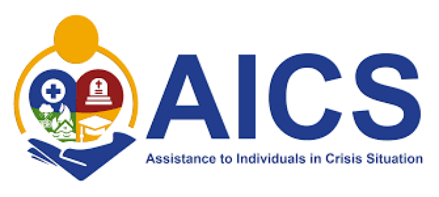
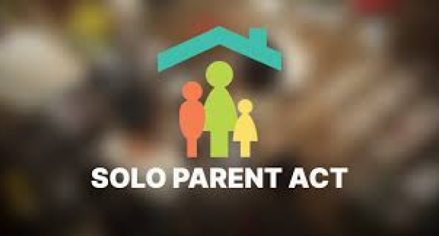

Assistance to Individuals in Crisis Situation (AICS)
The Office of the Municipal Welfare & Development provides financial assistance to individual and families whose resources are inadequate to meet their needs
PROGRAM'S OBJECTIVE
The objective of the AICS Program is to help our poor countrymen who are in crisis to meet their needs.
AICS ASSISTANCE
MEDICAL ASSISTANCE
BURIAL ASSISTANCE
FINANCIAL ASSISTANCE
EDUCATIONAL ASSISTANCE
Solo Parent
The DSWD being the led agency in the implementation of Solo Patent Welfare Act (RA 8972), advocates the implementation of comprehensive programs for Solo Parents in the local government unit through the MSWD
Persons with Disability
Programs that provides equal rights, opportunities and privileges as mandated by magna carta for Person with disability. This is done though individual and group counseling, orientation and mobility training, sport and